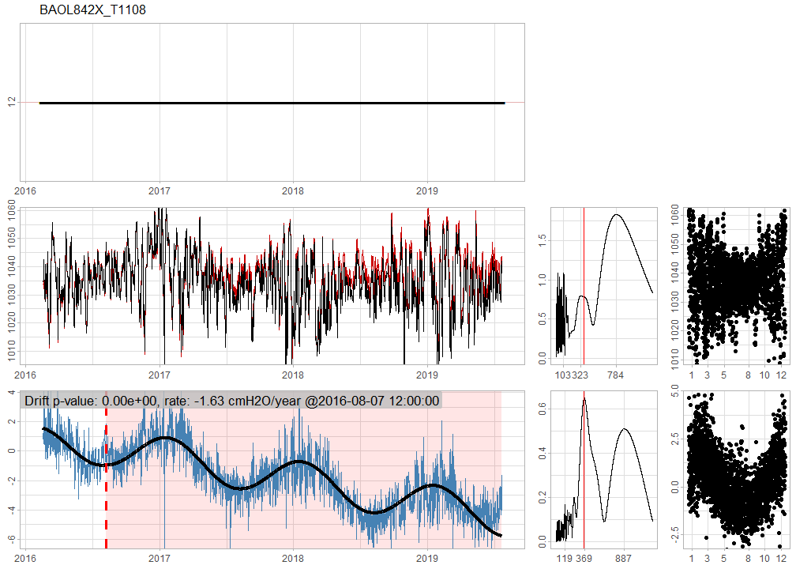

This is an advanced guide. It explains how detect_drift() works for air pressure data. Make sure you first read the getting started material.
In WMO (2018) drift is defined as “a continuous or incremental change over time in indication due to changes in metrological properties of a measuring instrument.” Here is a visual example of a clearly drifting air pressure series:
Figure 1: A drifting barometer series.
Most of the time the drifts are much more subtle and not evident from simply looking at the barometer timeseries. Hence this methodology and accompanying algorithm that can be used to facilitate drift detection.
For outlier detection in air pressure data we used a simple Gaussian noise model: it is simple and easy to interpret. For drift detection this Gaussian noise model is inadequate. The problem is the correlation between subsequent observations, which directly affects significance calculation of the drift as shown in this analysis report.
So what is a good air pressure model? In script 19/19b we did some testing with a full range of ARIMA models on all available barometer data. From that we have seen that there is a significant drop in likelihood from ARIMA(0,0,0) with non-zero mean to ARIMA(1,0,0) with non-zero mean. Subsequent more complex ARIMA models did not result in much better likelihoods – although the AIC/BIC test sometimes suggested otherwise.
A noteworthy observation is that ARIMA(0,1,0) performs almost equally well as the ARIMA(1,0,0) with non-zero mean. When \(\phi\) is close to 1 these two models are equivalent, and that explains the similar performance. At the same time it must be noted that air pressure does not behave like a random walk for reasons outlined further below.
So the chosen model for air pressure is ARIMA(1,0,0) with non-zero mean – shorthand AR(1). In formulaic notation:
\[ z_t - \mu = \phi_1(z_{t-1} - \mu) + a_t \] where \(a_t \sim \mathcal{N}(0, \sigma^2)\). For a more succinct notation (cf. Box et al. (2016)) one can use \(\tilde{z}_t = z_t - \mu\).
Interesting is how the autoregressive parameter \(\phi\) behaves in function of \(\Delta t\), the time interval between measurements. If we were to measure the air pressure each minute, we would see that subsequent measurements are almost identical – apart from intrinsic barometer error resulting in a very small \(\sigma^2\). The series would behave almost as a random walk. Almost, because although \(\phi\) would be close to 1, it would never be exactly 1. One way to see this is that the air pressure is stationary, while a random walk is not. The \(\phi = 1 - \epsilon\), however small \(\epsilon\) may be, will pull the series towards \(\mu\), and thus result in a stationary series.
Figure 2: Having \(\phi\) smaller than 1 (left) results in a stationary series around \(\mu\), while a random walk (right) will have no bounds. Both series have variance of \(a_t\) fixed to 25.
On the other extreme, if we would measure air pressure each 2 weeks (cf. script 18), we would see almost no correlation at all between subsequent measurements. In other words, \(\phi\) would be 0 and the resulting model would be simple Gaussian noise: \(z_t = \mu + a_t\) with \(\sigma^2 \sim 100\).
This analysis thus suggests that \(\phi\) is a function of \(\Delta t\), just like \(\sigma^2\). Unfortunately, the classical ARIMA models allow only for fixed \(\Delta t\). That is why the algorithm currently aggregates the measurements to 12h intervals (i.e. it is assumed that \(\Delta t = 12h\)).
Under \(\Delta t = 12h\) we can estimate \(\phi\) based on all available barometer data. This estimation suggests that \(0.80 \le \phi(12h) \le 0.90\). Knowing this, it seems plausible to assume the parameter as a-prior known information, instead of estimating it each time on each series separately.
For drift detection we use series \(d_t\) wich is defined as the difference between the original series \(z_t\) and a reference series \(r_t\). So it begs the question: how does \(\phi\) translate for \(d_t\). To simplify the notation we define \(\mu_d = \mu_z - \mu_r\) and \(b_t = a_{z,t} - a_{r,t}\). Then:
\[ \begin{aligned} d_t &= z_t - r_t \\ &= \mu_d + b_t + \phi(\tilde{z}_{t-1} - \tilde{r}_{t-1}) \\ &= \mu_d + b_t + \phi b_{t-1} + \phi(\tilde{z}_{t-2} - \tilde{r}_{t-2}) \\ &= \mu_d + b_t + \phi b_{t-1} + \phi^2 b_{t-2} + \phi^3 b_{t-3} + \dots \\ &= \phi d_{t - 1} + \mu_d + b_t \end{aligned} \]
The last equivalence one can see by just expanding \(\phi d_{t-1}\) recursively. The \(\mu_d = 0\) in case both series are height-compensated, otherwise it is their difference in height in cmH2O.
Three things are worth noting here. First is that \(d_t\) is still an AR(1) model. Second is that the AR(1) parameter is the same as in \(z_t\) and \(r_t\): just \(\phi\). And the last thing is that only the error is different: \(b_t = a_{z,t} - a_{r,t}\). This error-term we investigate next.
We assumed in our model definition that \(a_t \sim \mathcal{N}(0, \sigma^2)\). This makes \(b_t \sim \mathcal{N}(0, 2\sigma^2 - 2\text{cov}(a_{z,t}, a_{r,t}))\). In script 19 we estimated \(\sigma^2 \approx 25\) and \(\text{var}(b_t) \approx 2.2\). This suggests that \(\text{cov}(a_{z,t}, a_{r,t}) \approx 23.9\) and thus a very high correlation between \(z_t\) and \(r_t\). This effect can be seen in the following plot:
Figure 3: Comparison of variance for of \(z_t\) and \(r_t\) (left) and \(d_t\) (right) on equal scale. If \(z_t\) and \(r_t\) were not correlated, then the variance of \(d_t\) (blue) would be 2 times larger than that of \(z_t\) (black).
For drift detection we use the series \(d_t\). This is because \(b_t\) has much lower variance than \(a_t\), making drift detection much more sensitive. The resulting drift detection model is this:
\[ d_t - \mu_d - \delta(t-t_\delta)I(t\ge t_\delta) - \mathbf{\beta} \mathbf{x_t} = \phi[d_{t-1} - \mu_d - \delta(t-1-t_\delta)I(t-1\ge t_\delta) - \mathbf{\beta} \mathbf{x_{t-1}} ] + b_t \] where \(\mathbf{x_t}\) are the exogenous yearly seasonal sine and cosine components and \(\mu_d\), \(\mathbf{\beta}\), \(\sigma_d^2\), \(\delta\) and \(t_\delta\) are to be estimated.
Let’s use the series from Figure 1 and show how these estimates can be recovered with the detect_drift(verbose=TRUE) parameter.
# zdr is the drifting series and zndr is the reference series. ts.dr are the corresponding timestamps
# We focus on the attributes of the returned vector when verbose=TRUE.
attributes(gwloggeR::detect_drift(x = zdr, timestamps = ts.dr,
reference = list(list(x = zndr, timestamps = ts.dr)),
verbose = TRUE, plot = TRUE))
Figure 4: Diagnostic plots. For more information, consult the ‘Diagnostic plots’ section in ?gwloggeR::detect_drift
#> $class
#> [1] "Drift" "logical"
#>
#> $is.drifting
#> [1] TRUE
#>
#> $mu
#> [1] -0.03942238
#>
#> $sigma
#> [1] 1.487212
#>
#> $year.seasonality
#> sine cosine
#> -0.09242224 -0.02393547
#>
#> $timestamp
#> [1] "2013-10-26 UTC"
#>
#> $rate
#> [1] 2.89617
#> attr(,"units")
#> [1] "cmH2O/year"
#>
#> $significance
#> [1] 0\(t_\delta\) is the timestamp at which the drift starts. In this case it is estimated at 2013-10-26 UTC. The \(\delta\) is the drift rate, here estimated as 2.9 cmH2O/year. The \(\mathbf{\beta}\) expresses the yearly seasonality as sine and cosine components, here estimated as -0.09 and 0.02 respectively. And lastly, \(\sigma^2 = \text{Var}(b_t)\) is here estimated as 1.49².
From the output we gather that the drift significance is 0. It can be interpreted as the probability that there is no drift (i.e. the null-hypothesis). In other words, the smaller this value, the stronger the evidence that there is a drift. So what is a good threshold (i.e. alpha) for the significance? By default alpha is set to 1/100 which can be interpreted as one wrong detection of drift out of 100 non-drifting cases. One can modify alpha by supplying is as a parameter (e.g. detect_drift(alpha=0.001)).
For more information about the diagnostic plots in Figure 4, consult the ‘Diagnostic plots’ section in ?gwloggeR::detect_drift.
Parameters \(\delta\) and \(t_\delta\) are maximum likelihood estimates (MLE). Due to discrete and non-linear nature of \(t_\delta\) the maximization of the likelihood function is not straightforward. A secondary difficulty is that the AR(1) likelihood function is not convex either (cf. White et al. (2015)). The arima() function seems to produce good results, despite the non-convexity. The first problem we solve brute-force by fitting the AR(1) model to specific \(t_\delta\)s. Instead of fitting the AR(1) model for each possible \(t_\delta\), we scan in steps of \(\sqrt{N/2}\) where \(N\) is the number of observations. Subsequently we do a local search on all \(t\) in the vicinity of the optima.
Once \(\hat{\delta}_{MLE}\) and \(\hat{t}_{\delta_{MLE}}\) have been found, likelihood ratio (LR) test is used to test their significance.
A peculiar observation here is the fact that the \(\chi^2\) degrees of freedom – required by the LR test – are not equal to 2, but to some unknown \(2 + f(N)\) where \(0 < f(N) < 1\). For our case, where \(1000 < N < 10000\), it seems that \(f(N) \approx 0.8\) performs well in the sense that under \(H_0\) the \(p\)-values are uniformly distributed. Currently it is not clear in what sense the drift model violates the Wilks (1938) theorem, and thus what \(f\) is.
A second problem is the fact that \(b_t\) is not completely uncorrelated and also that its distribution has slightly larger tails than a true normal distribution. This results in the algorithm being more sensitive towards the end of a series, where a few outlying points could be detected as the start of a drift.
Here we discuss some real examples.

BAOL842X_T1108 has a strong seasonal effect and is drifting at a rate of -1.63 cmH2O per year.
“Air Pressure Analysis Reports.” n.d.
Box, George E. P., Gwilym M. Jenkins, Gregory C. Reinsel, and Greta M. Ljung. 2016. Time Series Analysis: Forecasting and Control. Fifth edition. Wiley Series in Probabilit and Statistics. Hoboken, New Jersey: John Wiley & Sons, Inc.
“Drift Analysis Scripts.” n.d.
White, Martha, Junfeng Wen, Michael Bowling, and Dale Schuurmans. 2015. “Optimal Estimation of Multivariate Arma Models.” In Proceedings of the Twenty-Ninth Aaai Conference on Artificial Intelligence, 3080–6. AAAI’15. Austin, Texas: AAAI Press. https://doi.org/10.5555/2888116.2888145.
Wilks, S. S. 1938. “The Large-Sample Distribution of the Likelihood Ratio for Testing Composite Hypotheses.” Ann. Math. Statist. 9 (1): 60–62. https://doi.org/10.1214/aoms/1177732360.
WMO. 2018. Guide to Instruments and Methods of Observation. Vols. I - Measurement of Meteorological Variables. WMO-No. 8. World Meteorological Organization.